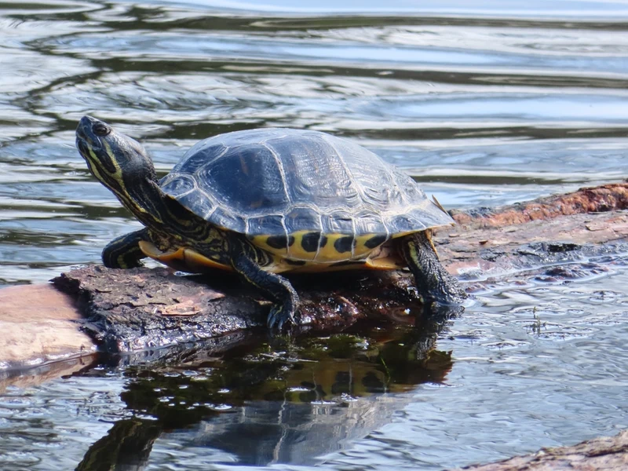

テネシー州カンバーランド川流域原産の水棲ガメ。アカミミガメ（Trachemys scripta）の亜種で、2023年6月より種全体が条件付特定外来生物に指定されている。新規の購入・販売・輸入は禁止されており、これから入手することはできない。すでに飼育中の個体は終生飼養が可能。活発で人慣れしやすい。

1年後の甲長は10〜14cm程度。アカミミガメに近縁で管理方法も似ているが、頬の赤マークがなく首の縦ストライプが特徴的。テネシー川水系の流れのある河川を好む種で、浮島での日光浴と水中での活発な泳ぎが日課になる。人慣れしやすい個体も多い傾向がある。
10年後、オスは甲長18〜20cm、メスは25〜28cmに達する場合がある。アカミミガメと同等の大型化をするため、60〜90cm以上の水槽が必要になる。20〜30年の寿命があり、成体の飼育スペース確保を最初から計画することが重要。
カンバーランドスライダーはアカミミガメと同属のスライダー属で、成体サイズは同程度に達しやすい。「アカミミガメの代わりに選んだから大きくならない」という誤解のまま小さい水槽で飼い始めると、成体時に対応できなくなるケースが報告されている。スライダー属として成体サイズを最初から計画に含めることが安定飼育への近道になりやすい。
テネシー州・バージニア州南西部のカンバーランド川・テネシー川水系に分布。スライダー属の中では比較的温帯性で、浅い流れの緩い河川・池沼を好みます。
雑食性で幼体期は赤虫・ミミズなど動物性を多めに。成体になるにつれ小松菜・チンゲン菜などの植物性を増やします。
← 横にスクロールできます
| 種名 | 甲長 | 難易度 | 必要水槽 | 特徴 |
|---|---|---|---|---|
| カンバーランドスライダー このページ | 18〜28cm | 入門 | 60〜90cm | 本種・新規入手不可（既飼育は終生飼養可） |
| キバラガメ | 17〜27cm | 入門 | 60cm〜 | 近縁・定番 |
| ペインテッドタートル | 13〜25cm | 入門 | 60cm〜 | やや小型 |
| ミシシッピアカミミガメ | 20〜30cm | 入門 | 90cm〜 | 条件付特定外来（新規不可） |
カンバーランドスライダーはアカミミガメ（ミシシッピアカミミガメ）と同種 Trachemys scripta の亜種のため、条件付特定外来生物の規制がそのまま適用されます。新規の入手・購入はできず、既に飼っている個体の継続飼育（届出不要）と無償譲渡のみ可能です。野外放流は法律違反です。長寿種なので、最後まで飼いきることがいちばんの貢献です。
飼育温度・湿度などの数値は国内飼育の一般的な目安を含みます。確定的な一次資料が乏しい項目は断定していません。
機材を揃える前に適性診断で確認。119種対応のツールで、あなたの生活環境に合う種も確認できます。